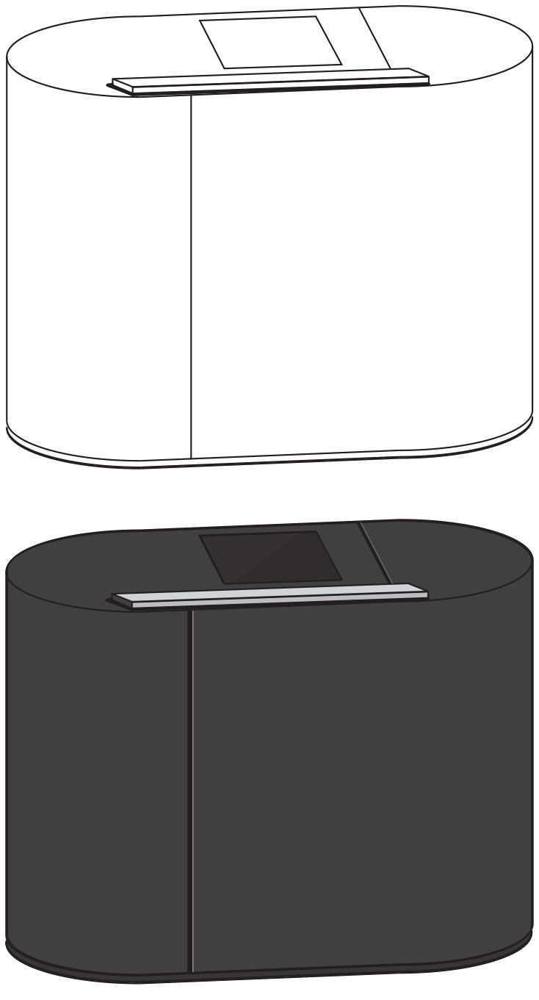

Strategic Vision
An Enhanced Over-The-Air Device Management UX
Evolving product portfolios and creating transformational experiences involves looking forward, anticipating user needs, experience gaps, consumer desire, and the trajectory of intersecting with other emerging technologies. Here is where this project began, with a future vision of remotely controling a interconnected ecosystem of "Things" in the home while in a remote location via a secure wireless network.
I created a vision for a mobile application that I socialized with a cross-functional leadership team to assess and discuss the concept feasability based on existing requirements.
New Product Concept Sketch
A new hardware product design language was being introduced for the evolution of Verizon branded products. Part of driving market change via the product portfolio included expanding functionality and capability of peripherial products in the the consumer market and providing access through Verizon's robust telecom network, this opportunity was ripe to execute on the UX vision.
Competitive Analysis & Product Landscape Review

I conducted a review of the competitive product landscape, benchmarking the current state and identifying opportunities for an enhanced UX that would contribute to producing a best-in-class product and presented findings to organizational leadership and other business stakeholders.
Target segements and users were identified to support use case and requirements development.
Device Industrial Design Concept Evolution For Requirements Definition
I produced concept illustrations of ideal user expereince surrounding the devices display and UI controls along with other technical capabilities that surfaced through product domain knowledge and prior CX/UX research. A third party industrial design vendor was utilized to evole the hardware look and feel.


{kind=link}
{kind=link}
{kind=link}
{kind=link}
{kind=link}
{kind=link}